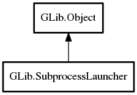

SubprocessLauncher
Object Hierarchy:

Description:
public class SubprocessLauncher :
Object
This class contains a set of options for launching child processes, such as where its standard input and output will be directed, the
argument list, the environment, and more.
While the Subprocess class has high level functions covering popular cases, use of this
class allows access to more advanced options. It can also be used to launch multiple subprocesses with a similar configuration.
Content:
Properties:
Creation methods:
Methods:
- public unowned string getenv (string variable)
Returns the value of the environment variable variable in
the environment of processes launched from this launcher.
- public void set_child_setup (owned SpawnChildSetupFunc child_setup)
Sets up a child setup function.
- public void set_cwd (string cwd)
Sets the current working directory that processes will be launched
with.
- public void set_environ (string env)
Replace the entire environment of processes launched from this
launcher with the given 'environ' variable.
- public void set_flags (SubprocessFlags flags)
Sets the flags on the launcher.
- public void set_stderr_file_path (string path)
Sets the file path to use as the stderr for spawned processes.
- public void set_stdin_file_path (string path)
Sets the file path to use as the stdin for spawned processes.
- public void set_stdout_file_path (string path)
Sets the file path to use as the stdout for spawned processes.
- public void setenv (string variable, string value, bool overwrite)
Sets the environment variable variable in the environment
of processes launched from this launcher.
- public Subprocess spawnv (string[] argv) throws Error
Creates a Subprocess
given a provided array of arguments.
- public void take_fd (int source_fd, int target_fd)
Transfer an arbitrary file descriptor from parent process to the
child.
- public void take_stderr_fd (int fd)
Sets the file descriptor to use as the stderr for spawned processes.
- public void take_stdin_fd (int fd)
Sets the file descriptor to use as the stdin for spawned processes.
- public void take_stdout_fd (int fd)
Sets the file descriptor to use as the stdout for spawned processes.
- public void unsetenv (string variable)
Removes the environment variable variable from the
environment of processes launched from this launcher.
Inherited Members:
All known members inherited from class GLib.Object